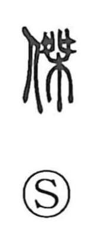

傑

Uncategorized
Kun: | On: ketsu
outstanding person ・ to excel ・ to surpass
Explanation
傑 is a phono-semantic character built from the person sign 亻 and the phonetic 桀. In ancient forms 桀 depicts criminals stretched out and fastened to the right and left branches of a tree—a scene that underlies the graph 磔, “crucifixion.” Related images help fix the picture: 梟 shows an inverted head with hair hanging down, the act of suspending it (kakeru), and when that head is shown hung from a branch by a cord it becomes 縣 (later 県). From such violent, awe-charged rites, the spirit of the executed was thought to be intensely potent. With 亻 indicating “person” and 桀 supplying both sound and the notion of fierce, surpassing vigor, 傑 came to mean an outstanding person, one who excels and outdoes others.